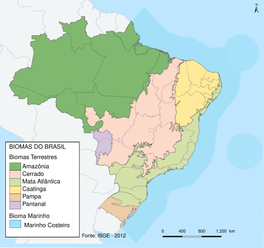

A elevada riqueza e a complexidade biológica dos diferentes ecossistemas brasileiros, frente às diversas pressões que vêm sofrendo, têm levado alguns desses ecossistemas a serem considerados como muito ameaçados ou mesmo entre os mais ameaçados do planeta. A Mata Atlântica, por exemplo, foi definida como um dos hotspots de biodiversidade mundial, conceito aplicado às áreas que apresentam altas concentrações de espécies endêmicas ameaçadas e passaram (ou passam) por perdas excepcionais de habitat. A maior ameaça à biodiversidade é a perda de habitats (Scariot, 2010).